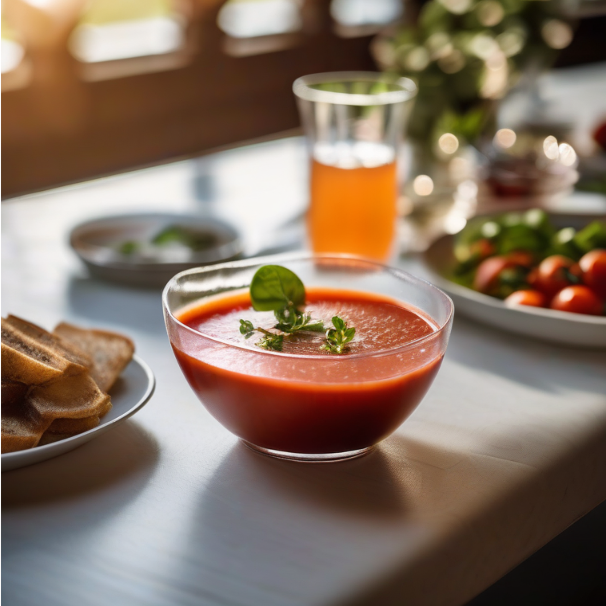

Gazpacho

Una deliciosa sopa fría de tomate y pepino, que es perfecta para los días calurosos. Es ideal para disfrutar de la verdura en un plato fresco y saludable.
Ingredientes
- 6 tomates maduros
- 1 pepino
- 1 pimiento verde
- 1 diente de ajo
- 3 cucharadas de aceite de oliva
- 2 cucharadas de vinagre
- Sal al gusto
Instrucciones
- Lavar y pelar los tomates, el pepino y el pimiento.
- Cortar los tomates, el pepino y el pimiento en trozos y colocarlos en una licuadora.
- Agregar el diente de ajo, el aceite de oliva, el vinagre y la sal.
- Licuar todos los ingredientes hasta obtener una mezcla suave.
- Colar la mezcla para eliminar las semillas y la piel.
- Refrigerar el gazpacho durante al menos 2 horas antes de servir.
- Servir frío, acompañado de pan tostado o picatostes si se desea.
Volver al menú principal